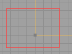

Vertex Editing
Vertex Editing allows you to change the shape of a brush by moving its vertices that define the shape.
Two ways to do the same thing
Camera mode
Select camera mode from the toolbox
![[button.mode.camera]](images/button-mode-camera.gif)
- Select a brush
- Hold down the CTRL key use the Left Mouse Button (LMB) on a vertex. A red cross appears on that vertex. This is the pivot.
- Hold down ALT + and drag the LMB.
Vertex Edit mode
Select vertex edit mode from the toolbox.
![[button.mode.vertex]](images/button-mode-vertex.gif)
- Select one or more brushes. The red builder brush can be selected too.
- In UnrealEd 2, the brush vertices highlight to grey squares.
In UnrealEd 3, the brush color changes to selected as found in the UnrealEd Advanced Options.
![[orthogonal.vertexedit.boxed]](images/orthogonal-vertexedit-boxed.gif)
Hold either ALT-Gr* or CTRL + ALT, click in empty space in an 2D UnrealEd Viewport and drag a marquee selection rectangle around the vertices you wish to select.
When you release, the boxes on selected vertices turn white.
![[orthogonal.vertexedit.selected]](images/orthogonal-vertexedit-selec1.gif)
- CTRL-click on any of the white-highlighted vertices and drag to move them. Be careful not to start the click & drag too close to another brush, or that will become selected too.
To add vertices to the current selection, repeat the procedure, holding SHIFT as well, ie CTRL+SHIFT+ALT or SHIFT+ALT-Gr*.
Alt-gr is the right-hand Alt key on European keyboards.
Mode differences
Selecting multiple vertices
- Camera mode allows only one vertex to be moved at a time.
- Vertex Edit mode allows the rectangular marquee to select multiple vertices.
Moving Stacked Vertices Simultaneously
Because the 2D UnrealEd Viewport cannot display depth, sometimes your brush will only show one vertex where 2 or more exist in 3D space. This can be demonstrated with a cube. Choose the right mode depending if you want to move one or more stacked vertices.
- Camera mode selects only one vertex
- Vertex Edit mode selects all stacked vertices
Problems
- At 16 grid units or lower, dragging vertices zip around too fast
- At 64 grid units or higher, dragging vertices feel sticky
- Therefore, 32 or 16 is best.
- Brushes can occasionally 'break' when vertex editing. The cause for this is unknown but the effect will likely result in a BSP Hole.
Related Topics
- UnrealEd Interface is the main reference for the interface in general
- Moving vertices is usually done in one of the 2D UnrealEd Viewports
- Toolbox covers all the buttons down the left-hand side of the UnrealEd window
- See Mouse Control for more information on mouse actions in different modes.
Comments
Sobiwan: I still cant figure out what "Alt-gr" is. Anyone?
Tarquin: "Alt-gr is the right-hand Alt key on European keyboards.
Ironblayde: Is there a way to do this numerically, i.e. select one or more vertices and then enter the movement values in a console command? I ocassionally find an excuse to use vertex editing with my grid resolution set to 1, and it's about as much fun as... something really not fun.  I didn't see anything over at UnrealEd 2 Console, but maybe someone knows a trick.
I didn't see anything over at UnrealEd 2 Console, but maybe someone knows a trick.
Foxpaw: I haven't tried Brush Hacking, so I don't know if it would work for you, but it might be what you're looking for.
Tarquin: AFAIK, there's no numerical option. As Foxpaw said, you can try hacking. Or move your brushes back on grid!! 
Random Guest: There should be a warning not to drag vertices on top of endpoints of the same brush (like, you want to make a rectange into a triangle, from side-view). If you try that, unrealed2 (maybe 3 too) will crash saying not enough vertices.
Winxp Rules: If UnrealEd 2 keeps crashing on you when you want to make triangles, try using the 2D Shape Editor. It might achieve what you need. I've also tried what you describe in UnrealEd 3, and it doesn't crash, so it's probably a glitch with UnrealEd 2 only.
Wormbo: Sometimes in Vertex Edit mode the vertices no longer snap to the grid automatically even though I didn't change anything I'd be aware of. Any idea how to turn grid snapping back on without restarting UnrealEd? (The grid snapping for actors and brushes is still enabled!)
SuperApe: I've seen this happen too. And it seems related to other selection/manipulation errors that occur with respect to grid lock. If I select multiple objects, the "center" of the group is usually the center of the first object selected. However, this "center" of my selection (whether a single object or group) can change with a right-click. (I believe) IIRC, the same problem you're experiencing happened to me after selecting multiple verticies while grid lock was on. After a little manipulation, the "center" of my selection shifted (which then snapped to grid) and suddenly all the points had selected were off. I ended up scrapping the brush as soon as I identified the problem, so I could start again. When this problem happens with brushes/objects, at least you can manually set the Location under Movement. But with verticies... (?)
CygnusX1: In UnrealEd 2 is there any easy way to move a vertex to another vertex of a different brush when they are not snapped to grid? The "Vertex snap" suggest it would do, but it snaps only the pivot point.
If there is, maybe it should be mentioned on this page how to achieve it. If not... well... that would be strange.